1 European Centre for Living
Technology, Venice, Italy
2 Daptics
Inc., San Francisco, CA, USA
johnsmccaskill@gmail.com
Abstract. Conway’s Game of Life (GoL), a famous 2D
cellular automaton (CA), is extended to allow evolution by associating genetic
information with individual live cells, that specifies variant local CA rules. Genomes
are formed by copying (potentially with mutation) or movement from one of the
live neighbour cells and are destroyed at death. Just as biological evolution
discovers innovations in the space of chemical and physical functionalities, we
explore how the addition of genetic information enables an evolutionary process
that can coordinate robust complex dynamics by exploring spatially
inhomogeneous local modifications to the non-robust GoL rules.
We
discovered a large family of deterministic rules which avoid stochastic choices
of ancestor for genetic inheritance.
Systematic genetic variations near to the game of life rule are
investigated and found to produce signs of computational complexity with an
abundance of spaceship and glider gun structures. We investigated evolution for
four successively more differentiated symmetry cases in the nearest neighbour
rules: semi-totalistic, corner-edge totalistic, 8-rotation symmetric, and
physical 2D symmetric (4-rotations and 4-reflections).
The
genetic evolution is analysed by fast ongoing genealogy construction and
population weighted activity statistics. The spatial structure is captured
using hash encoded quadtrees of the connected components, which are also mapped
through time for novelty and with activity statistics. This together with a
novel genetic tracking of the dynamical displacement ancestry of live genes
allows an efficient recognition of regular dynamical structures such as spaceships
which transport information while changing shape, solving an open problem in
finding efficient alternatives to ε-machines for 2D automata.
Keywords: Evolution, Cellular Automata, Artificial
Life, Genealogies, Self-Organization, Game of Life, Activity Statistics.
Interest in
cellular automata (CAs), as models of emergent complexity, began with von
Neumann’s 29-state CA, designed for universal construction [1], and became widespread with
Conway’s discovery of a simple 2D Game of Life (GoL) [2] and Wolfram’s analysis of
computational complexity classes in 1D CAs [3], also extended to 2D [4]. Conway’s and Von Neumann’s life-like
CAs are defined with strong relaxation to the ground state in order to
facilitate computation by rational design, and universal computation has been
proven by construction in both cases [5, 6]. Both however involve fundamentally
unprotected computations, in which perturbations, in the form of even the
simplest travelling patterns, will almost certainly destroy not only the
computed result but the carefully crafted computing architecture as well.
Because of this, and despite the widespread continuing interest in novel
computational structures in the GoL and related CAs, there is a major jump to
evolving systems in which computation needs to survive robustly in the presence
of potential interactions with many competitors. This paper is concerned with
bridging this gap, maintaining deterministic computation as far as possible,
apart from random and rare mutational changes, while supporting locally
determined genetically encoded rule changes that enable evolution.
The GoL [2, 7] is a deterministic dynamical system
that takes 2D spatial patterns of binary states (1 ‘live’ or 0 ‘not-alive’) on
a square lattice to new patterns as time progresses discretely, through the
action of a local rule (CA), each site’s state at time t+1 being dependent on its state and the states of its eight nearest
neighbours at time t. The game of life is a semi-totalistic
cellular automaton (CA) rule, the influence of neighbours on the next state being
determined by the sum s of their state values only. A live cell survives only if s= 2 or 3, otherwise dying (changing to state 0), and a non-live cell undergoes birth (transitions to 1) only if there are exactly 3 live neighbours at
time t. The GoL has become a
canonical example of a complex system, with simple local rules that produce
complex dynamics. It has a rich
phenomenology of dynamics from special initial conditions, documented in
massive catalogue projects and other articles [8].
Specially engineered initial states can have extremely long transients,
occupying large regions of space, and indeed the Gol has been shown to support
universal computation [5, 9, 10] via a set of motifs including
so-called spaceships, glider guns and still-lifes.
Notwithstanding
these properties, the GoL has not been a good model for studying the emergence of complexity, for two main
reasons. The first is that starting from
random initial state patterns on a finite compact domain, it is well known that
the GoL almost always settles down to a combination of isolated static and
simply periodic structures which are individually of limited spatial extent. Although
specially engineered initial states can have extremely long transients,
occupying large regions of space, the absence of complex interconnected pattern
persistence starting from random initial conditions means that it is not a good
candidate for the emergence of complexity. In fact, this behaviour is so robust
that, as in a sand-pile, random isolated birth events cause the relaxed state
to self-organize to a critical state where there is a power-law of frequencies
for cascade magnitudes [11, 12]. Secondly, the complexity generated
by GoL is not robust, in the sense that perturbations destroy functionally
complex structures. Even when a complex
dynamical structure happens to be produced by a random initial condition, it is
typically destroyed by any glider or spaceship that perturbs it.
In biology,
genetics is coupled to real-world physics and chemistry, enabling evolution to
produce a complex biosphere. In the
present work, we use nearest neighbour CAs to provide homogeneous models of
rich but simple physical chemistry. We
then enhance these CAs by including genetic information, with the aim of
understanding how complex information may emerge from this simple spatial version
of evolution. The coupling of GoL to genetic information has already been
attempted in various ways (precursors: immigration, quadlife;
with genetics: Sprout Life [13], HetCA[14, 15], evolife
[16-19]), but a systematic investigation of
evolving dynamics is still outstanding.
We add genetics to GoL-like binary CAs by associating a genome with each
live cell. The genome of a live cell encodes local departures from the GoL
rule, making the system a spatially inhomogeneous cellular automaton. Genetic inheritance is ensured by a newly
born live cell’s genome being moved from one or copied (potentially with
mutation and recombination) from one or more of the live neighbour cells (there
are three in the GoL) and being deleted when the cell dies. In this article we
focus on the simplest case of mutation and asexual reproduction without
recombination. We specify (i) how departures from the GoL are determined by
genes; and (ii) how genes are propagated from one time-step to the next, deriving
deterministic inheritance rules that may be genetically neutral or sequence
dependent. The addition of genetics to
the GoL alters long term dynamics; the long-term dynamics of the GoL is a field
of static patterns or patterns with low periodicity (blinkers). Figure one illustrates such a state, compared
with an example of an evolving genelife population with interacting
spaceships.
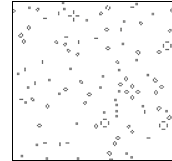
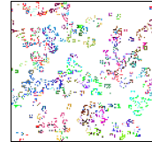
Fig. 1. A comparison of the classic Game of Life’s
long-time dynamical state after 2000 time- steps (on the left; fixed patterns
and simple local periodicity) with an example of an evolving genelife
population after the same time (on the right; ongoing generation of novel
patterns). For the genelife population,
different genomes are shown with different shades of grey (different colours
online).
This
investigation is motivated by a fundamentally interest in the interaction
between computational complexity and evolution. Computational complexity in CAs
has addressed the relationship with universal computation, universal
construction [3, 4, 20] and the edge of chaos [11, 12], also for the evolution of CAs [21]. Information transfer measures of
complexity have been applied [22-24] and, most notably, statistical
complex dynamics captured with the -machine formalism of Crutchfield [25-29]. Complex dynamics have also been
addressed in combinatorial game theory [7], with complex spatial pattern
formation emerging also in evolving systems [30, 31] including evolutionary games [32, 33].
A genome is
associated with each live cell and contains inherited information, copied from
its ancestors at birth, which may be used to track the flow of information in
both the GoL and the wider family of CA models investigated here. The genome of
a live cell encodes the local CA rule governing that cell, and this rule may
deviate from the GoL local rule, making the system a spatially inhomogeneous
cellular automaton. The local state of a
cell is described completely by the presence or absence of a genome (the live/empty
(1/0) state in the GoL) and for the case of a live cell, the 64-bit sequence
comprising its genome. The restriction to 64-bit binary sequences is not
fundamental but enables fast computation using machine integers. Note that it
makes more sense to refer to 0 cells as empty (or inanimate) than dead: they
contain no bioinformation. Our model
could easily be extended to include information strings for the 0 cells (complex
resources) as well as the 1 cells; we choose to adhere
to the commonly used biomorphic analogy associating life only with the 1 cells.
As in the
GoL, we restrict attention to a local CA on a 2D square lattice, with the Moore
8-cell nearest neighbourhood, so that the discrete dynamics are completely
defined locally by specifying the next state ci,j(t+1)
of a cell at lattice site (i,j) at time t+1, in dependence on the previous state
of the cell ci,j(t) and of
its 8 nearest neighbours. The GoL rule
is only semi-totalistic, because its next state depends on the central state in
addition to the sum s9 of
its 9 neighbour states (including the central state), the next state being 1
for s9 == 3, ci,j(t) for s9==4, and 0 otherwise. We employ the 8-neighbour exterior
sum s=s8 and note that, for the semi-totalistic rules like
GoL, the next state is a function of (c,s)
where c=ci,j(t). As
in natural systems, we retain the distinct dependence on the central state c
as well as s, but we shall also consider less symmetric rule families
which depend on other neighbour properties in addition to their sum s.
We use throughout the simplifying convention of only specifying rules that
result in a 1 (live cell) at the next state, the default being 0 (empty cell).
To complete
the specification of the Genetic GoL system dynamics, we need to specify (i) how
live/empty next states are determined by the configuration of live neighbours
and their genomes (departure from GoL rules are possible), and (ii) how the
information in the genomes attached to live states are propagated when the next
state is live.
Local genetically determined rules. We use the term genome to refer to the full
genetic sequence, reserving the term gene to refer to a specifier of part of
the rule-table. How such LUTs are encoded in the genome must be decided by the
model. Rather than always to allow all possible rules in a given symmetry
model, which may result in ubiquitous proliferation, it is also of interest to
consider restricted models in which a global constraint is introduced so that
only a subset of the possible local states can be specified for active rules,
i.e. for gene-dependent modification of the default GoL local rule. For
example, in the semi-totalistic case, a birth-survival mask is introduced which
would have 1-bits signifying permission for a subset of positions corresponding
to particular s values for either survival or birth. While the genes may
contain other entries, the model would not allow these genes to enable birth (survival)
for local state configurations that correspond to s values for which
there is a 0-bit in the birth (survival) mask. For example, with the 16-bit
birth-survival mask 0x0406, in the semi-totalistic case 2, only at most GoL
rules are allowed, and with the mask 0x0606 the genetically encoded extension
of the s=2,3 case 1 model family is specified. For the lower symmetry models,
the birth-survival mask will contain up to 64 bits. Thus, the mask bits corresponding to birth
and survival bits of the genome determine whether the local rule can be
affected, according to the local configuration.
The globally specified birth and survival masks determine the universe
of local rules that will be explored by evolution. Zero’s in these masks reduce
the size of the universe, one’s in the masks enlarge the universe. Exactly how many bits are in the birth and
survival masks depend on the degree of symmetry breaking employed in rule
construction, as described below. More
complex symmetry breaking results in more bits in the mask, generally giving
finer grain control of the evolutionary process.
In this
work, we consider two types of genetic encodings of rules:
1. a direct position-dependent encoding
assigning specific genome bits (or possibly contiguous sets of bits for
redundant encodings) at certain positions to specific LUT entries
2. a modular variable-length
position-independent encoding in which the genome encodes (at any block-aligned
position) the local states which result in a next state of “1”.
With s
live neighbours and a centre cell state c (0 or 1), there are s+c genomes in the neighbourhood, s+1
for survival (and birth with overwrite) transitions and s for pure birth
transitions (0). We chose to treat pure birth and
overwrite transitions in the same way, and hence in the standard models
neglected the central cell’s genome influence on overwrite processes, and to
keep things uniform also for survival. For survival we did compare this with
the natural alternative of only the central genome determining rule departures
(1 of the option bits in the replication scheme control word). It remained to
decide how the s genomes in the neighbourhood should determine the rule
departures. Seeking compelling constructions which apply to all possible
non-zero s values, we identified three ways of combining the information
in the individual genomes for particular LUT entries that should result in a
central live cell state at the next time step: (i) And (ii) Or (iii) Majority.
“And” means that all, “Or” at least one, of the genomes must contain the LUT
transition for it to be effective locally. “Majority” means either and of the genomes must encode a LUT transition
for it to be effective. While we have encoded each of these variants in genelife,
we concentrate on the case (i) in this paper. We return to the different
symmetries of CA rule generalizations, beyond the semi-totalistic rules of the
GoL, after explaining the choice of ancestor.
Choice of ancestor. Here we address the choice of ancestor genome to copy when a live cell
is created or overwritten. In evolution models, the usual procedure to choose
an ancestor for offspring is to use either random (neutral) selection, a
weighted probabilistic sampling or tournament selection based on the
sequence-dependent fitness properties of the genomes. In the context of extending
the GoL however, introducing random choices of ancestor introduces a possibly
unnecessary lack of determinism into the model. If we consider firstly the
neutral case, then it is important to observe that, in the GoL, birth occurs
only for 3 live neighbours, and we observe that for all possible
3-live-neighbour configurations there is a deterministically unique most
different neighbour as seen in Supplementary Fig. 2. The same is true for all
odd s values, {1,3,5,7}. Only for the four non-zero even values
{2,4,6,8} of s are there ambiguous configurations in which it is not
possible to distinguish positionally between ancestors. In these cases, there
are a number of options still to deterministically resolve matters: (i) not
allow birth in these ambiguous cases, (ii) use the neighbourhoods of the
neighbours to complete the choice of ancestor, (iii) complete birth with
another e.g. GoL rule encoding sequence, (iv) perform recombination
between the unresolved sequences, (v) distinguish sequences by fitness if
different, or instead (vi) use random choice if other distinctions fail. Our
implementation allows any of these options to be employed. The important point
is that only a subset of configurations need resolution and even a
deterministic algorithm which disallows transitions (as in (i)) in these cases
is viable. Note that one version of (ii) of significance is to prefer ancestors
which will not survive in the next time step, which brings us to the next
point.
Movement vs. copying. Whereas the indistinguishability of 1-states in binary CAs means that
it is not possible to distinguish movement from death and rebirth, in this
paper with genetic information attached to the live states, this is possible. We
found that in the GoL and many related CA rules, in almost all cases in which a
gene is chosen as an ancestor of a new live state, the gene does not survive at
its previous location. This is significant because it means that two or more
birth events are usually required for proliferation, and that single birth
events can usually be interpreted as motion. We implemented an option for
genelife in which we enforce death for parent genome cell states (in the cases
that they are not anyway overwritten or not marked for survival by the CA rule
table). This had little impact on the dynamics in the case examined. With this
modification, the distinction between birth and movement is clear: movement
occurs if an ancestor gives rise to one live cell at a neighbouring position
and birth occurs if more than one live cell (and their copied genomes) arise
from that ancestor. It would make a
difference if mutation were deemed not to occur for transitions involving
movement. Also, it might be appropriate to make the choice of an ancestor
sensitive to the interpretation of movement vs
birth: e.g. to minimize the number of births needed to maintain the
dynamics. For example, an isolated rod
of three live states is a GoL oscillator between vertical and horizontal
configurations. In the deterministic most different ancestor canonical
assignment of ancestors from three live neighbours, the central gene is copied
to two new sites so that (without mutation) the rod becomes genetically
homogeneous in one step. This process is clearly a copy mechanism. On the other
hand, in the 0-bit canonical assignment of ancestors, the two peripheral genes
circulate anti-clockwise and this is more naturally understood as a process of
motion and as such should be carried out without mutation. We postpone further
investigation of the ramifications of distinctions between movement and copying
for later work.
Additional selection mechanisms. Fundamentally, models of selection distinguish
three modes of selection:
1. The neutral model, for which the
deterministic position-dependent choice of ancestor outlined above, see also
ESM, is an alternative to random choice.
2. Selection based on comparing fitness
as a property of a single individual, independent of the presence of other
individuals in the neighbourhood. This has the property of well-ordering all
the genetic sequences (by fitness), with transitivity in comparisons ensured: i.e. A>B and B>C implies A>C.
The focus is here on selection mechanisms that attribute an increasing cost to
more prolific (less GoL-like) and more specific rule specification, fostering
complex dynamics close to GoL. We do investigate the impact, for comparison, of
a number of simple sequence-level selection pressures like selection favouring
genetic sequences with more or less ones.
3. Selection based on a contest or
tournament between individuals in which fitness depends on the other individual
involved, there is no transitive ordering of genomes, and in population terms
the fitness of a genome is population density dependent. Perhaps the best-known
example of strongly not well-ordered fitness is in the scissors-paper-stone
game A >B>C>A. We chose instead the four sequence classes (A, B, C, D)
with selection A>D>C>A as well as D>B and C>B. This scheme is
interesting in specifically supporting a multi-sequence coexistence making use
of multiple spaceships.
Note that
independently of these optional additional selection mechanisms on the choice
of ancestor, the cooperative genetic coding of rules for LUT transitions means
that there is also an underlying selection for sequences which can induce
proliferation in their locality effectively through supporting birth or
survival rules.
Rule symmetries. For genetically dependent rules, a natural first family is the extended
GoL symmetry class of 218 semi-totalistic rules, distinguishing 18
states (2 central states times 9: the sum s
of live neighbours ranging from 0 to 8). The sparsity of such rules with
properties near to the GoL led us to also consider the broader families of
rules with lower symmetries, distinguishing up to 64 local neighbourhood states
(the maximum for which a 64-bit genome can encode the rule). The full set of
512=28+1 distinguished, local states (9 cells), giving rise to 2512
possible rules, is too large to explore initially, especially with our restricted
length genomes, and is physically less appealing because it does not take
spatial symmetry into account. Between semi-totalism and full asymmetry we
identify three intermediate symmetries (cases 3-5 below). This leads to the
following six cases, of which we implement and study the first five:
1. Semi-totalistic rules with s=2,3
(gene dynamics with fixed homogeneous rules) (4/4)
2. Semi-totalistic rules s=1-8
with LUTs for 1-states determined by genes (16/18)
3. Quarter-totalistic rules s=1-7,
se=0-4 with distinct corner and edge counts (46/50)
4. Octavian-rotation symmetric rules
for s=2-6, crot=0-9 (64/68)
5. Isotropic rules in 2D (4-rot’n,4-refl’n)
for s=0-4, crot=0-12 (64/102)
6. Full set of rules without symmetry
reductions (512).
The numbers
in parentheses are the number of distinguished local configurations in the
specified family of local CA rules: i.e. the number of bits required to specify
the rules, for (chosen s / all s). These configurations divide into the two
equal-sized subsets, birth/movement and survival: The birth/movement rules involve
copying/moving a genome from one of the neighbours. The survival rules for
current state “1” define the other exceptions to the default rule which is next
state “0”. For each value of s, we also introduce a control bit
“overwrite” which determines whether birth/movement rules can overwrite an
existing live cell or not. These are collected into a mask overwrite for
the eight s values 1-8, with semi-totalistic control of this property
(no s=0 overwrite).
We found
that the semi-totalistic case is too coarse an encoding of CA rules, to allow
significant genetic evolution of complex structures beyond the classic game of
life. We investigate the more differentiated rules and find that they produce a
range of interesting dynamics. When coupled to a genetic population, these
differentiated rules rapidly evolve to proliferate unless very strongly
constrained (by the birth-survival mask introduced above).
We preface
this study in section 2.1 with rules which, like the GoL rule, can only yield
live cells for s = 2,3 and for fixed rule departures without genetic
determination. As we shall see, some of the interesting evolutionary phenomena
revealed by Genelife are already captured by this simplest case. Naively, one
would expect 2x2 = 4 distinguished states (c,s) = (0 or 1, 2 or 3) that can possibly lead
to live states and hence 24=16 different genetic extensions. We
perform a survey of the additional choices available for coupling genetics with
the dynamics in this first case and implement these in a unified computer
program to explore the model properties.
2.1
Semi-totalistic
rules involving only s=2,3
Since the GoL
starting from random compact patterns of live states almost certainly relaxes
to a set of unconnected simple patterns or periodic structures, with new
live states only being produced in a small number of contexts, it is not as it
stands a good substrate for evolution. In contrast, the conventional approach
generalizing the GoL [20], requires that the birth and
survival rules form a single interval of neighbourhood sum values, with lower
and upper limits in the sum variable s,
restricting the possible rule-tables to a family with members specified by four
integers SlSuBlBu.
Most of these rules lead to strong proliferation of live states or their
extinction, and in order to allow genetic encoding to deliver novel dynamics of
interest it turns out to be important to further dissect the rule-tables in the
vicinity of the GoL rule 2333.
Genetic
modifications that reduce the number of configurations resulting in live states
will further restrict the potential for ongoing evolution, which requires more
active rules (more neighbourhood state configurations leading to live cells)
than the GoL. The most parsimonious first choice is, as for the GoL, to
continue to consider only rules with next live states for s = 2 or 3 live nearest neighbours, i.e. distinguishing 4 neighbourhood states as candidates for a live
next central state c: (c,s) {(0,2), (0,3), (1,2), (1,3)}. Since there are 4 starting states and
2 predicted outcomes (live or not) for the next central cell state, there are 24
such rules, corresponding to the subsets of the starting states that give rise
to a live next state. The GoL rule has survival for s=2,3 and birth for s=3,
corresponding to the subset RGoL =
{(0,3), (1,2), (1,3)}. Since we need more active rules, it is logical to begin
with letting the genes control the missing birth rule for s=2.
If the proliferation induced by this extra birth process should prove too
strong, then one could counter this by removing one or more of the elements of RGoL.
This compensation could either be fixed or dependent on the genes. Since there
are a number of intermediate and hybrid cases, we summarize the various options
that we have investigated in Table 1.
In order to
distinguish the genetic dependency from uniform changes in the rules, we split
the survival and birth processes into two optionally executed stages, the first
depending on the selective genetics (Sg and Bg)
and the second genetically independent (i.e.
enforced, Sf and Bf), as shown in Table 1. The first 8 binary options in Table 1 give rise to 144 different cases.
For birth, all of the 24=16 cases are different, in contrast with
the case in survival, where there are only 3x3=9 cases. Even if birth is
enforced, the genomes of the live neighbours may still have a vital impact on
the future dynamics by determining which of them becomes the ancestor of the
newly born genome. In addition to the distinction of birth and survival
depending on the state of the central cell, there is another possibility opened
up by the genetics which is not distinguished in the binary GoL: Instead of
simply remaining alive, the genome of the next state may be overwritten by one of
the neighbouring genomes according to a birth process. We label this binary
option O2/3 as it may be allowed independently for s=2,3. This
corresponds to the well-studied Moran model of population genetics [34]. There are thus 576 different
genetic extension models, even before one considers details of the genetic
dependency.
In the
interests of further limiting and analysing the extent of rule departures from
the GoL, we also record here for completeness two further binary options Nr
and Ns, which enforce GoL rules if respectively the previous
transition rule was a non GoL rule or the current state was last produced by a
non GoL transition. In near GoL simulations colouring cells by departures from
the GoL rules in these two ways allows an assessment of both the potential and
effective impact of the modified rules on the dynamics.
Table 1. Binary options for the control of genelife
restricted to 2 or 3 live neighbours.
|
Transition |
Nr |
c |
s |
S/Bg/f |
|
selective
genetic birth for 3 live neighbours |
0 |
0 |
3 |
Bg3 |
|
selective
genetic birth for 2 live neighbours |
1 |
0 |
2 |
Bg2 |
|
enforce birth
for 3 live neighbours |
2 |
0 |
3 |
Bf3 |
|
enforce birth
for 2 live neighbours |
3 |
0 |
2 |
Bf2 |
|
selective
survival for 3 live neighbours |
4 |
1 |
3 |
Sg3 |
|
selective
survival for 2 live neighbours |
5 |
1 |
2 |
Sg2 |
|
enforce
survival for 3 live neighbours |
6 |
1 |
3 |
Sf3 |
|
enforce
survival for 2 live neighbours |
7 |
1 |
2 |
Sf2 |
|
birth overwrite
for 3 live neighbours |
8 |
1 |
3 |
O3 |
|
birth overwrite
for 2 live neighbours |
9 |
1 |
2 |
O2 |
|
enforce GoL
rule if last rule non GoL |
10 |
0/1 |
2/3 |
Nr |
|
enforce GoL if
last state change non GoL |
11 |
0/1 |
2/3 |
Ns |
The first
column of the table records the transition processes extending the GoL rules.
Of the 4096 options opened up by this table, only 9/16 i.e. 2304 of them are
distinct because only 3/4 of the selective/enforced survival options are
distinct. The remaining columns consist of an index number nr, the central cell
state c to which the transition applies, the sum s of live neighbours, the
transition notation where S and B stand for survival and birth and the
subscripts g and f for genetic and enforced. All twelve options except for 4
and 5 have been realized in the genelife software.
There are still several decisions to be made associated with the choice
of ancestor, even after the choices in Table 1 have been made. For example, even
for neutral models one can support birth only if two genomes are the same or
different making a neutral choice of which will be the ancestor for offspring
between them if this criterion is fulfilled.
2.2
Genetically
encoded semi-totalistic rules for s=1-8
For the semi-totalistic case, if we exclude the
special cases of spontaneous birth (B0 i.e. birth for s=0) and lone survival (S0) then
there are 8+8=16 distinguished states that may be independently part of an
active next state ruleset. In this case,
genomes may specify any look up table (LUT) depending only on the central state
c and neighbour sum s via two separate subsets of s-1 values for
survival (1→1) and birth (0→1). The omission of s=0 birth is equivalent to there being no
spontaneous generation of life without neighbouring information (as in the
Pasteur experiment) but [20] uncovers interesting cases with s=0
survival allowed. For s=1..8, there are 216
CA rulesets, and these may be encoded by a binary genome of length 16 with one
bit per LUT entry. In this paper, we restrict our attention to genomes of maximal
length 64, and often use the term genome to refer to this full sequence,
reserving the term gene to refer to a specifier of part of the rule-table. We
may also employ multiple bits () to encode each LUT entry for an
active rule, for example with only one of the possible gene patterns being active, then genomes of
length 16x are required. In this paper, we only consider this option for the
semi-totalistic case, where there is sufficient length in the genome to allow
the range of values =1,2, or 4.
An alternative modular encoding
employs 4 bits per entry: 3 bits to
encode the values of s for which the next state is live, plus 1 bit for
survival or birth. The standard GoL would require at least 3*4 = 12 bits to be
specified, 0xb23 in hexadecimal notation, so that 64-bit genomes such as
0xaaaaaaaa22221111 or any other combination of only the three digits 1,2,a would encode the GoL. Longer genomes may contain the
same entry repeatedly allowing for mutational error resistance, especially when
the birth-survival mask makes a significant number of entries ineffective. For
example, the sequence 0x0000000000000a21, encodes the GoL local rule if the
birth-survival mask is 0 for s=1.
2.3
Quarter-totalistic
rules s=1-8, se=0-4, counting corners/edges (46)
It is clear
from geometry that of the 8 neighbour sites, the four corner sites are further
away (distance ) from the centre site than the edge
centred sites (distance 1) on a unit square lattice. We count the number of
live edge centred sites as se, then if distance is taken into account
and neighbouring groupings otherwise ignored the state transitions of a quarter
totalistic CA depend on the tuple (s,se) with
the possible values of se ranging from max(0,s-4) to min(s,4)
with numbers of different configurations for s=0-8 of {1,2,3,4,5,4,3,2,1}, in
total 25. If we exclude the configurations s=0,8, for which this distinction
plays no role compared with the semi-totalistic case, then there are 23
different neighbour configurations distinguished by this symmetry and a total
of 46 different LUT entries for survival and birth. Only 1-bit direct encodings
of LUT transitions are possible in a 64-bit genome, but modular encoding of
individual rules is also allowed: using 6-bits per rule as a combination of (i)
4 bits to specify B/S and s-1 (ii) 2 bits to specify se in the
range 0..3. The value (s,se)=(4,4)
is placed (and decoded) as an exception in one of the unreached bit
combinations. At most ten such modules can be encoded on a single genome,
sufficient to specify the GoL rules and many others.
Actually if
we count the sum of the weighted distances, each s,se configuration is different, and so that
this quarter-totalistic symmetry actually warrants consideration as a variant
in the semi-totalistic family of rules which only depend on the sum of the live
neighbours (in this case weighted sum).
2.4
Octavian
symmetry genetically encoded rules for s = 2-6 (64)
An
alternative symmetry breaking of the semi-totalistic case involves 8-fold
rotation symmetry in which distinctions between corner and edge states are
ignored (the 8 neighbouring lattice positions being regarded as lying equally
spaced on a ring). While it is not possible to do this simultaneously in 2D for
all sites, one could consider this symmetry as being physical when the
potential of direct contact to a neighbour is more important than the distance.
In contrast with the semi-totalistic case we then distinguish the groupings of
live cells around this ring, regarding all 8 rotations of the ring as
symmetric. This simple octavian symmetry results in the following numbers of
different patterns for each value of s from 0-8
{1,1,4,7,10,7,4,1,1}. Since we are most
interested in cases generalizing the s=2,3 GoL rules, and the cases s=0,1,7,8
can be deemed fundamentally of less interest, we concentrate on the central
values of s=2-6 for which the 32 different configurations (up to
octavian symmetry) allow possible 32 survival and 32 birth rules. This choice
is expedient, allowing a direct one-bit genetic encoding of each transition
rule for a 1 at the next time step to fit in a 64-bit genome. An alternative hybrid modular encoding of
rules using a combination of (i) 5 bits to specify B/S, s-1 and which of
two sets of 5 distinguished configurations is addressed and (ii) 5 bits as a
mask specifying which of these 5 configurations is active. At most six such
modules can be encoded on a single genome, sufficient to specify the GoL rules
for example.
The
symmetry class and hence LUT entry for any specific configuration of live
neighbours can be found efficiently by defining a canonical minimum value over
the eight possible rotations of an eight bit pattern, regarded as an eight bit
integer, and mapping any configuration to its canonical minimum value to find
its index in the LUT.
2.5
Isotropic
genetically encoded rules for s = 0-4 (64)
With full 2D
spatial symmetry (4 rotations and 4 reflections), the numbers of distinguished
configurations for s=0..8 are {1,2,6,10,13,10,6,2,1} with sum 51, still
many fewer than the full asymmetric distinguished numbers , {1,8,28,56,70,56,28,8,1}, with sum
256. In this study, with our 64-bit genomes, we will only fully investigate the
evolution of differentiated rules for lower range s=0..4,
with 32 distinguished configurations, using 1 bit each in the genome to specify
survival and birth rules in the direct encoding. As in section 2.4, an
alternative hybrid modular encoding of rules using this time a combination of (i)
6 bits to specify B/S, s and which of two sets of 6 distinguished
configurations is addressed and (ii) 6 bits as a mask specifying which of these
6 configurations is active. At most five such modules can be encoded on a
single genome, sufficient to specify the GoL rules for example.
3
Analytical
tools for spatial genetic computation
We focus in this
section on a defining a set of analysis tools that can be applied to analyse
both the spatio-temporal and genetic evolution in genetic cellular automata
models as well as the extent of natural computation taking place. Not only can the
system be analysed at the current time in terms of spatial patterns for both the
binary live/dead cell states and for genetically resolved patterns, but the
spatio-temporal dynamics can also be studied in terms of the time-evolution of
spatial patterns or of genes, the latter involving potentially both genealogies
and spatial patterns. We commence with simple local classification tools and
then extend them to more global ones.
3.1
Spatial
visualization of cell array
The first and most
immediate set of tools for analysis involve classifications of local
information on the cell array, using specifically graded or discrete colour
combinations.
Genomes. The black and white representation
of empty and live cells in the array for binary cellular automata can be
further differentiated by using a variety of colour schemes for genetic
information: genotypic, phenotypic or ancestral, all pertaining to the genomes
present locally, either at the current time or in relation to previous times.
Genotypic
hash colouring. The
genetic sequence space (currently binary of length 64) can be mapped to 24-bit colour
on 3 8-bit channels (red, green, blue) by a pseudo-random hash function. This
will ascribe a particular colour to any live cell based on the gene value at
the cell, with empty cells being displayed as black. This colouring does not
preserve the topology of Hamming distance in the sequence space, but typically
separates nearest neighbours strongly, so that even single point mutations can
be readily detected.
Phenotypic
colouring. A
phenotype in evolutionary biology is the set of observable traits or properties
of an individual (which may be determined in complex ways from a genetic
sequence or genotype) that contributes to its fitness (survival of its
inheritable information to the next generation). For example, if the choice of
ancestor in a proliferation rule is based on the number of 1s in its binary
genetic sequence, then a graded colour scale which changes from blue to red as
the number of 1s increases from 0 to is an example of a phenotypic colouring. For
genes encoding local LUTs, the number of coded entries or the number of rules
for survival or birth may be regarded as phenotypic indicators and coloured
accordingly.
Ancestral
colouring. Since
the topology of the hypercube is high-dimensional, it is not possible to embed
this smoothly in colour space, to allow neighbouring sequences to have neighbouring
colours, although a self-organizing feature map could in principle be employed
to approximate this. Instead, we may group related sequences by common
ancestor, choosing the hash colour (see above) of the ancestor to label cells.
Two types of ancestor are employed in this work, both at a selectable number of
genetic changes back in the past, producing two families of colourings. The novel
ancestry approach steps directly from a gene to the first entry of the gene’s ancestor
in the population history. In contrast, the clonal ancestor steps to the
immediate clonal ancestor of a clone. A clone is a set of identical sequences
produced by a connected sequence of birth events. These spatial analysers of
genetic relations are complemented below by the corresponding structural and
temporal genealogies in the set of tools with temporal axes.
Dynamical
patterns. The
genelife model exhibits spatiotemporal pattern formation, both in the sequence
of spatial arrangements of live cells and in their genetic differences. The
temporal sequence of these patterns can be analysed locally or globally in time
and space. In order to support global temporal analysis, all genes and all
spatial patterns that are produced during a model simulation are recorded using
hash tables. In order for spatial patterns beyond nearest neighbours (such as spaceships)
to be recorded one needs a mechanism for segmenting the lattice. In this paper,
we employ a rapid online connected component labelling algorithm to distinguish
spatial patterns.
Transition
class colouring.
Transitions between states in genelife can firstly be classified as events of
four types: death, survival, movement, birth. Combined events involving both
death and movement or birth are possible if overwriting is permitted in the
model. Furthermore, birth processes may be classified as clonal (exact
inheritance) or with mutation. All these classes of events can further be
divided into classes for different neighbourhood configurations depending on
the symmetry of the model: using s for semi-totalistic
symmetry, (s,se) for
quarter totalistic etc. Alternatively,
transitions can be classified as conforming to the GoL rule for that
configuration
Extended
neighbourhood period-one spaceships. Fast parallel bit mapping macros are employed
to map the 7x7 array of up to third nearest (Moore) neighbouring live/empty
states into a single 64-bit integer for local processing. These packed integers
are then compared efficiently with those at the previous time step of their
eight lattice neighbours (i.e. comparing overlapping offset-1 patterns
in the directions NW, N, NE, E, SE, S, SW, W) to detect preserved or nearly
preserved patterns (period 1 spaceships). The cells are coloured by the
direction of travel with brightness depending on the quality of pattern
preservation.
Connected
components. Rapid connected component labelling algorithms,
as reviewed in [35], can be employed to distinguish
spatial patterns at every step of the simulation. We implemented a modified linear
two-scan equivalent-label resolving algorithm with 8-neighbourhood, employing
rank union-find to resolve labels, the Suzuki decision tree [36] (Wu’s enhancement [37] did not result in significant
efficiency gains) and periodic BCs. The
algorithm was adapted to work with both binary images (live/empty state) and
with genetically differentiated images in which connected components must
consist of the same genome or more permissively genomes with a common ancestor
at some specified level or time (ancestors may be either global or clonal, see section
3.4).
The
connected components can then be extracted efficiently as quadtrees [38], i.e. as a 4-tree of sub-squares, storing
all sub-patterns encountered in the hierarchical construction of a quadtree in
a pattern hash table (using the same software hashtable.h
as the genomes). Small patterns (8x8 pixels or smaller) are keyed directly by
their 64-bit binary patterns while larger patterns are keyed by combining the
four 64-bit addresses of their four square sub-image patterns {NW,NE,SE,SW} to a single 64-bit hash key with custom code
minimizing collisions. This quadtree encoding is similar to but with a
different handoff between large and small patterns to that employed in hashlife [39] for Gosper’s
algorithm [40] and our code development was aided
by that implementation.
Although it
would be an improvement for pattern recognition, we did not invest in reducing
patterns to single representatives of their symmetry class (e.g. by rotation or
reflection in the case of the isotropic rule sets of section 2.5). The
connected component patterns typically separated into a set of small frequently
occurring patterns and larger patterns only found once in the simulation. This
was more pronounced for the binary patterns. Larger connected components with
the same genome are rarer. Since all patterns found in the simulation are saved
in the hash tables, it is a single lookup to ascertain whether a pattern is
novel, and to count reoccurrences of patterns. Thus, we enhanced the connected
component labelling of different components by colour with an optional novelty
filter, which darkens the colours of patterns that have already been
encountered.
In order to
track the information in spatial patterns over time, it is important to map the
connected components at one time to those at the next time step. For unique
assignment this is a linear assignment problem, and we initially used the
LAPMOD algorithm [41] to find an optimal map between components.
However, the more general problem of finding an (optimal incomplete) alignment
matching components with weights determined by the pixel overlap between
patterns, can be addressed as a maximal flow problem on bipartite graphs. A
useful source of information on these algorithms is Tim Roughgarden’s
Stanford lectures (CS261). We modified the Hopcroft-Karp algorithm for maximal
flow, with worst case execution time in terms of the number of edges and vertices  in the bipartite graph, based on the
implementation of R. Gupta [42]. Typically, connected components at
one time step overlap with one or a few connected components at the next time
step, so that a genealogy of connected components could be studied. However, we
do not present this in the current paper. Instead, we use the mappings between
connected components to provide continuity in tracking patterns over time and
in colouring the cellular automata.
in the bipartite graph, based on the
implementation of R. Gupta [42]. Typically, connected components at
one time step overlap with one or a few connected components at the next time
step, so that a genealogy of connected components could be studied. However, we
do not present this in the current paper. Instead, we use the mappings between
connected components to provide continuity in tracking patterns over time and
in colouring the cellular automata.
Displacement
genealogies. The
above two methods are capable of labelling simple spaceships effectively which
do not execute a complex periodic set of shape transformations. Here we
introduce a novel dynamical pattern analysis tool, made possible by the genetic
inheritance in the genelife model. We introduce a short-term dynamical memory
packed into a 64-bit integer, in keeping with our general strategy of efficient
machine integer-level processing. The novel feature is that this dynamical
memory follows the genealogical inheritance path of live cell survival and
ancestry, rather than sampling an expanding set of neighbour configurations. To
be precise, any live cell at time t persists either by a survival or birth rule,
and so at each time step and for each live cell, in the case of birth we first
copy the integer dynamical memory (initially zero and termed golr) of the ancestor, and then in both cases we push
(left shift and bitwise or) 4 bits of information to it: the four bits are a
birth/survival bit and for birth a 3-bit displacement index 0..7 for
{NW,N,NE,E,SE,S,SW,W} of the ancestor and for survival the 3-bit value s-1
mod 8. This short-term dynamical memory (golr)
value thus records the ancestral displacement and survival configuration
dynamics for the last 16 time-steps.
The
displacement genealogy can then be used to identify various dynamical
structures in the current CA. It has the advantage compared with other
dynamical records of tracking the dynamics associated with the transmission of
the live cell genetic information. For display we can further process this
record by analysing the memory for periodicities and near periodicities, by
calculating the minimal mismatch 4-bit byte shift (period) when comparing the
dynamical memory with its shifted value and calculating the mean displacement
of the dynamical memory for its optimal period. We use a colour representation
to display important features of this dynamical memory, in which brightness
corresponds to quality of match, one channel (blue) corresponds to the optimal
period (1-15 or 0 if none above a matching threshold) and one channel (red)
corresponds to the mean displacement at the optimal period.
We note
that capturing the essential dynamics of information processing in dynamical
systems has been a major challenge, with the two major approaches of information
transfer entropy [22, 23, 43, 44] and -machines [25, 26, 28, 45,
46] proving increasingly
computationally intractable as one moves from 1D CAs to 2D systems for larger
periodicities. Facing these difficulties, neural networks have been used to extract
statistically significant dynamical features (epsilon networks) in 2D [47].
3.2
Global
time evolution of genomes, clones and patterns
The global
temporal evolution of the model can be captured by keeping track of the
populations of all the genomes and patterns that occur. Although for natural
systems a daunting proposition, it turns out that this is possible in the
current framework using appropriate hash tables and segregation of patterns.
For genomes we record each new genome that occurs in a simulation in a hash
table. We use the efficient and self-contained C-package hashtable.h
[48] with 64-bit hash keys: for genomes
these are the genomes directly, for clones we use the x, y and t
coordinates of the birth place and time of the clone and for spatial patterns
we use a 64-bit quadtree hash code of the root of the tree or the patterns
directly as hash keys for 8x8 bit patterns or smaller. See section 3.1 for a
description of the binary, genomic and ancestrally discriminated connected
component decompositions. Note that these patterns are not aggregated
corresponding to the symmetry of the transition rules in the model: although
this would have been a further useful condensation.
In a single
pass through the current state, we can count the populations of extant genomes
and clones and once appropriately processed for connected components, we can
assemble populations for the spatial patterns too, distinguished by binary
state, genome or common ancestor. We identify the traces over time of these
populations by an appropriate colour label corresponding to the hash key.
Population scaling. In order to provide a robust
visualization of populations of different magnitudes, we introduce a saturation
scaling approach which is gleaned from the Michaelis-Menten biochemical
kinetics of enzymatic reactions. The following rescaling of populations using the mid-point parameter (cf. Michaelis constant)
(1)
has the value when , approximates to at low values and saturates at for high values of . We also use this rescaling for
activities in the section 3.2.
Evolutionary
activity is a statistic designed to measure when components of an evolving
population are persistent by virtue of their contributions to members of a
population [49, 50].
The choice of component defines what aspect the statistics track; we
will consider two examples, genomes and spatial patterns.
A component
labelled by i has activity at time t given by
, (2)
where is a count of the component’s presence at time
t.
We will refer to live activity
as the activity of only the components that exist at time,
, (3)
where if , and otherwise. Even neutral evolution produces components
that can persist for some time, and there are ways to construct neutral models
to adjust activity measurement to signal only activity beyond neutral [50-52]. We will not require this in the
present work, the main reason being that the case where all genes have no
effect reduces to the GoL, which asymptotically produces no new activity
because its dynamics relaxes to a field of fixed and low-periodicity local
patterns.
Activities
of genes or spatial patterns are stored in the relevant hash tables and updated
efficiently using the recursion above, using the linear dependence of on individual components to update
only those component contributions that change in the current state.
From the
component activities, we may form the time-dependent distribution of activity,
for all activity and live activity,
 and
and  . (4)
. (4)
We will find it convenient to view activity in two ways, examples will
be seen below, as a superposition of activity waves (one wave for each i), and as an evolution of the activity
distribution, represented by the time trace of quantiles for each (or ).
For visualizing the individual waves, we scale them as in Eq(1) to see long-lived, high activity waves together with
newly produced low-activity waves.
Gene activities
and populations.
When we consider components to be genes,
we may label components with (instead of i), and is simply the number of genomes present at time .
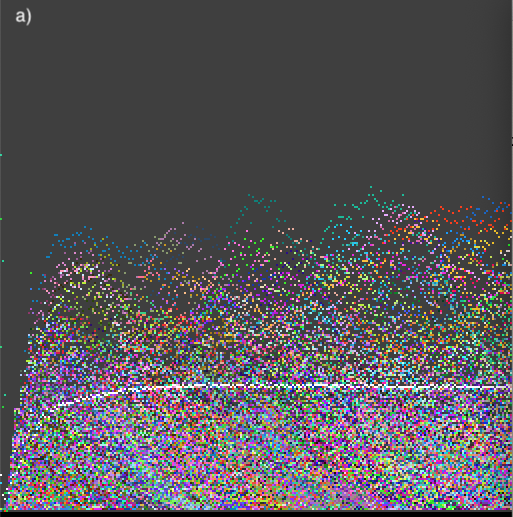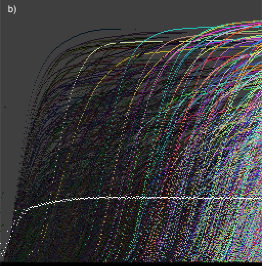
Fig. 2. Temporal evolution traces: a) Population statistics of genomes and b) Activity waves for t = 0 to 128. Populations, , and live activity waves, , are coloured with different shades of grey corresponding to different
genomes  and activity waves for genomes that are extinct are shown
in black. The global density is shown in white (on scale 0 to 1, bottom -top).
and activity waves for genomes that are extinct are shown
in black. The global density is shown in white (on scale 0 to 1, bottom -top).
a) b)
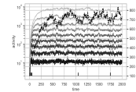

Fig. 3. Temporal evolution of deciles of the live
activity distribution , for two examples of evolutionary
dynamics, with two different sets of meta-parameters. The number of genetic species is shown with a
dark dotted line. In a) we see converge to a rather stable distribution. Stable values of lower deciles imply that new
genes are constantly being produced and are persisting in the population. In b) we see a collapse of the genetic
population for t < 500, followed by a recovery; persistence of new genomes
in the following recovery is seen in a burst of new activity waves, reflected
in the increase of low- and mid-level deciles from to .
Spatial pattern activities and
populations. As
described above, connected spatial components may be rapidly detected for each
time step. This enables the measurement of
spatial pattern activity, which tells us whether there is an ongoing production
of novel spatial patterns as a result of genelife evolution. The global record of spatial patterns can be
traced via populations or activities (as shown in Fig. 4).
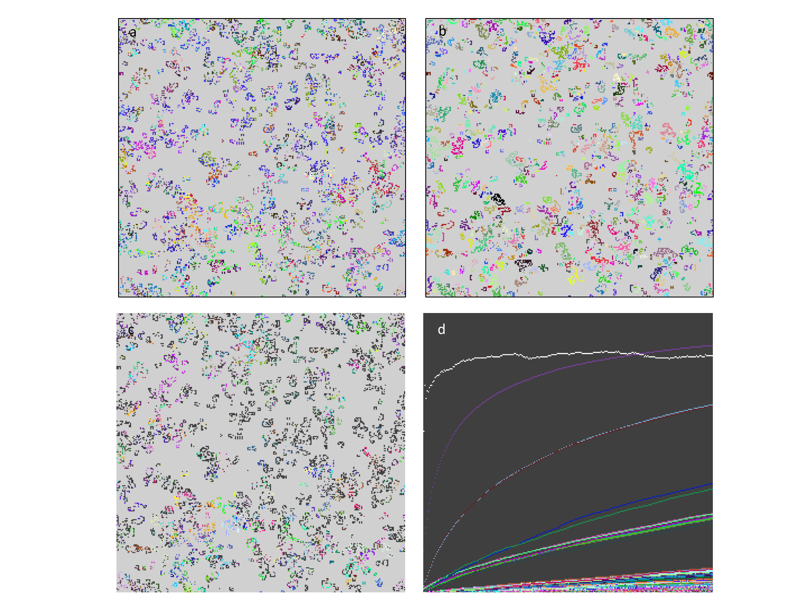
Fig. 4. Spatial
pattern analysis and connection with genealogies. a) The pattern of live cells
after t=256, coloured by genome identity;
b) The corresponding pattern of connected components, coloured by
connected component identity – note that the connected components are often
comprised of more than one genome; c) Patterns coloured by common ancestor of
clones at depth 2: The dark clones have root common ancestor, this is common at
the early time shown; d) Activity waves of connected components, each wave
corresponding to a different connected component.
3.4
Genealogies: global and clonal.
The study
of inheritance in evolution has included genealogies and their statistics as an
essential component in reconstructing the past, most recently and successfully
in the form of coalescence theory [53-55], describing the statistics of the
number of generations back to a common ancestor, applied to simple models of
evolution [56] and the construction of evolutionary
trees, the quality of which has been evaluated with statistical geometry [57]. Limited samples of sequences from
current populations can be used to construct coalescence statistics and
evolutionary trees. In genelife, inheritance is based on asexual reproduction,
which simplifies genealogies since with a single parent the number of ancestors
for an individual does not grow exponentially backwards in time. This allows a
more complete record of ancestry to be recorded and updated at every timestep
and the use of fast genealogical reconstruction to display the evolutionary
development of a complete simulation.
Rather than
consider every birth step, the majority of which do not introduce sequence
changes (for the typically low mutation rates ca. 10-2 to 10-3
appropriate for evolving short genomes of length 64 employed here), we introduce
two abbreviations of complete genealogies, both of which only record genetic
changes. The first and most extreme abbreviation is the first ancestor (global)
genealogy, recording in the hash table entry for each genome encountered in the
simulation both the time at which it first appears and the genome of its
ancestor. Apart from initialization, or possibly a random influx of standard
genes such as a GoL-encoding gene, which is given a special root sequence as
ancestor, every new genome arises by mutation from an existing gene, its
ancestor. Genealogical reconstruction is then straightforward, tracing through
the hash table from first ancestor to first ancestor and noting also the time
at which each ancestor first appears.
The second type
of abbreviated genealogy we use is clonal, also tracing only genealogical
inheritance steps that involve mutation, but tracing the genealogy for every
clonal population of a genome (a clone is the identical progeny of each new
mutant arising in the population). Each genome may appear multiple times in
separate spatially or temporally separated clones in the population. Clones can
be identified uniquely by the time and space coordinates of the cell in which
the mutant genome of the clone is produced. This so called clonal birth-id
may be used as a 64-bit hash key for storing all clones that occur in a
simulation: each hash table entry records the ancestral clone from which it was
produced and the genome of the clone as well as other statistics like the size
of the clone and its evolutionary activity.
Visualization. In order to visualize efficiently the evolutionary trees resulting from
these genealogies we use the same array (matrix) of colour entries used to
display the spatial pattern of the genelife CA.
Along the horizontal axis of the array, each column is devoted to an
extant genome or clone in the current population, choosing the most populated ones if there are more of them
than can be displayed, and the time at which ancestors arise is displayed along
the vertical axis, using discrete steps of length , where  is the total simulation time. In a single
trace back of ancestors for the extant genomes or clones, we place the hash colour-id
of the genome for each ancestor in the row corresponding to the time at which
the ancestor was produced. If multiple ancestors occur in the same discrete
time interval, the genome of the oldest is displayed (i.e. overwritten in the matrix). Fig. 8 shows examples of
first ancestor (global) genealogical trees which can be displayed in real time
during a simulation. Colour and video material for these genealogies is
available in the online supplementary information. In addition to the temporal
vertical axis, Fig. 8 also shows
genealogical depth plots in which the vertical axis shows simply the number of
ancestral mutation steps, instead of their duration.
is the total simulation time. In a single
trace back of ancestors for the extant genomes or clones, we place the hash colour-id
of the genome for each ancestor in the row corresponding to the time at which
the ancestor was produced. If multiple ancestors occur in the same discrete
time interval, the genome of the oldest is displayed (i.e. overwritten in the matrix). Fig. 8 shows examples of
first ancestor (global) genealogical trees which can be displayed in real time
during a simulation. Colour and video material for these genealogies is
available in the online supplementary information. In addition to the temporal
vertical axis, Fig. 8 also shows
genealogical depth plots in which the vertical axis shows simply the number of
ancestral mutation steps, instead of their duration.
3.5
Simulation
and analysis software
A systematic
interactive simulation and analysis tool was written primarily in C (over 7000
lines of custom code, with additional use of 700 lines of hashtable.h
code [48]) and with a custom python front end
(using numpy, matplotlib, pySDL2) for graphics,
simulation control and analysis (ca. 2000 lines of code), with Jupyter notebooks documenting standard usage and recording
results. The software is written to take advantage of parallel bit processing
in long integers but does not yet take advantage of GPUs or other parallel
processing architectures, nor the special acceleration provided for example by Gosper’s algorithm [40]. Emphasis was on a flexible generic
platform supporting online analysis tools with global recording of novel
structures found during the simulation. The software is available on github at http://github.com/js1200/genelife1.
In this section
we present some evidence for several key findings revealed by application of
the analysis tools to the simulation platform genelife, which invests the
computational universe of CAs with the capabilities of evolution. Only an
initial sample of the kind of new insights and results afforded by genelife
can be presented in this paper. We first demonstrate the purely deterministic
evolution, with ongoing innovation of patterns exhibited by the model in the
absence of mutation. We then show how increasingly fine dissections of the
transition between subcritical and supercritical proliferation can be achieved
using the successive symmetry breakings in section 2. We demonstrate how
ongoing evolution is revealed by the tools of activity statistics and
genealogies and extend this analysis to the domain of spatial patterns. We
leave the exploration of the information potential in initial patterns for
controlling computation to future work. Instead, in the final section we
explore one of the novel possibilities for characterizing the natural
information occurring in evolving dynamical systems by introducing dynamical
genealogies and exploring their ability to capture systematic computational
motifs arising in the simulation. This provides an efficient genetic
alternative for 2D CAs to epsilon machines [25], which were applied successfully to
1D CAs [29].
4.1
Deterministic
dynamics of evolution
Case of no mutation. The deterministic extension of the
GoL through genelife is illustrated for the case of s=2,3 with a
non-well-ordered selection scheme as described in section 2.1. The state of the
512x512 cell lattice after ca. 1000 timesteps is depicted in Fig.
5 both for genomes and connected
spatial components along with several filters identifying travelling spaceship
structures including the displacement genealogies of section 3.1. Novel
localized spatial patterns continue to arise as documented both by the activity
statistics comparing times 500-1000 with times 9500-10000, and by the novelty
filtered components, plot of number of live cells that are part of novel
components over time (f). Using the global hash table for connected components,
only the novel patterns are depicted in bright colours in Fig.
5c. The frequency of novel spatial
patterns, occurring when spaceships collide giving birth to new spaceships, has
not changed significantly even after 10x the simulation time. In contrast, only
rarely are novel spaceships found after t=1000.
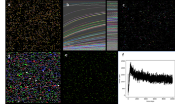
Fig. 5.
Deterministic spatial
evolution of ongoing novel patterns without mutation. a-e) simulation status at
t=1002 a) live cells coloured by genome b) activity traces of connected
patterns, left last 512 timesteps up to t=1002, right same for t=10066 c) connected patterns with novelty filter
darkening all non-novel patterns d) fast
spaceship detection using local 7x7 neighbourhood colouring cells moving in
directions N,E,S,W with red, green, blue and white e) displacement genealogies
identifying moving locally periodic automata with period 1 in green and longer
periods (rare) in bluer tones, static structures in dull red. f) number of live
cells in novel components.
It is clear even from this
simple example, which could be reproduced in all of the symmetry breaking
extensions in section 2, that allowing different species into the GoL enriches
the dynamics – from generic relaxation to very simple static or low period
structures with rare gliders from random initial conditions, to relaxation to a
robust and diverse population of spaceships that continue to repopulate the
space and produce novel patterns at much longer times than are typical for the
relaxation of the GoL.
4.2
Symmetry
breaking from semi-totalistic to isotropic
As discussed in section
1 and 2, the GoL decays too strongly for almost all initial conditions to
support a spontaneous supply of patterns that could act as a substrate for
evolution. The capability of genetically modified local rule tables to modulate
the dynamics near to the GoL rules is limited by the number of variants with
proliferation rates near to the threshold between proliferation to fill the
lattice and decay to rare quiescent local periodic structures as in the GoL.
This depends on the spatial symmetry of the rules. For example, the
semi-totalistic rules are sub-critical in the GoL for S23B3 but supercritical
for S_B23 so that with s=2 or 3 rules no closer approach to criticality is
achievable. As an example of the novel capabilities introduced by symmetry
breaking, as discussed in Sections 2.2-2.5, in Fig.
6 we examine the ability of the
symmetry broken S_B23 rule sets to evolve closer to the critical threshold for
proliferation. Yet finer differentiation is possible by including combinations
with differentiated survival, and exhaustive exploration of this threshold must
await a study dedicated only to this point, since there are 260
isotropic combinations to investigate just for the three numbers of live
neighbour rules s=2,3,4.
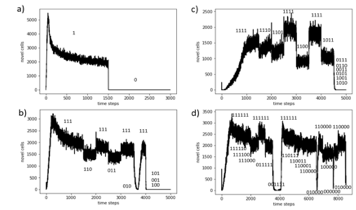
Fig. 6. Symmetry breaking of s=2 rules near to proliferation threshold. The number of live cells that are part of novel connected components is shown for the four symmetry classes in Sections 2.2-5 (a) semi-totalistic, b) quarter-totalistic, c) octavian and d) isotropic. The simulations were run for no survival but with overwrite with the entire s=3 rule sets allowed, but only the masked members of the s=2 rule (as shown in the text labels) were allowed: these values changed as shown during each simulation run. The genome choice was neutral but different genomes were required for birth (mode 5).
4.3
Activities
and genealogies show ongoing evolutionary process
Evolutionary
activity has long been a signal of ongoing evolution; if a population
continuously produces new genetic variants that succeed in surviving and
propagating in the population, the population continues to evolve. We have seen, in the case of deterministic
evolution discussed in section 4.1, that even when the genetic
population is constrained to have no innovation (suppressing random mutation),
evolutionary activity of spatial patterns reveals that evolution can proceed
robustly nonetheless.
Evolution
within the more simply defined rule spaces tends to produce a certain kind of
open-endedness, with ongoing production of new genetic material that is
successfully absorbed into the population.
However, the dynamics appears to be quite similar, notwithstanding the
new genes being absorbed into the population.
This is a signal that these new genes are drawn from a genetic subspace
that is neutral with respect to the dynamics, and hence the ongoing production
of genetic activity does not produce new dynamical functionality.
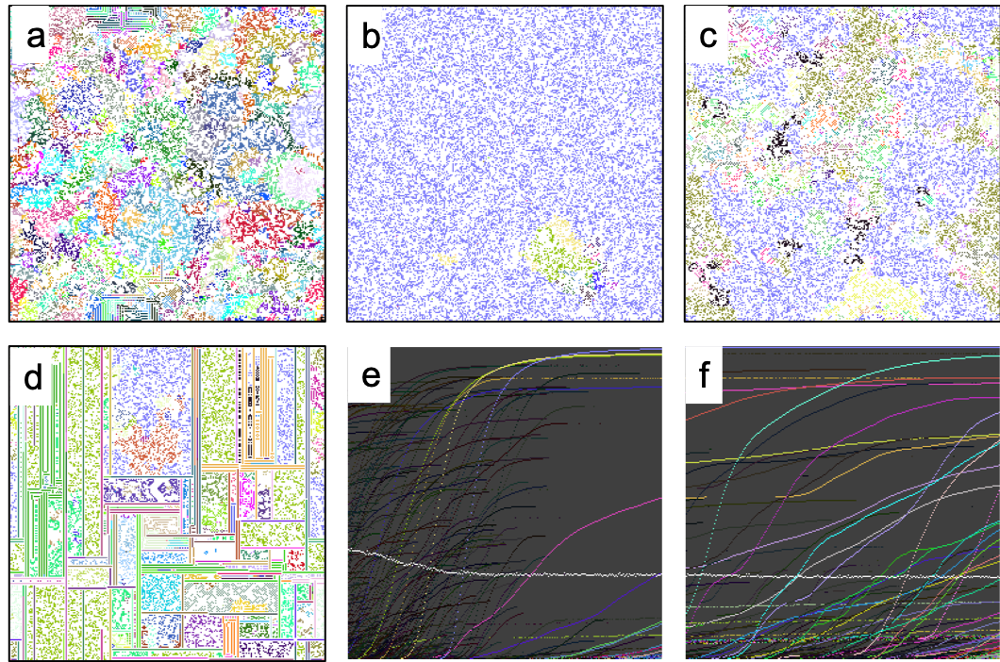
Fig. 7. Complex evolution with quarter-totalistic rules [NP1] (see section 2.3). Panes (a)-(c) describe a sequence proceeding
from one dynamical phase (a) early expanding blooms (b) t≈550 near collapse of
the population to one dominant genome (c) t=8000 successful invasion of new genomes that
evolve and persist, with dynamics of competing domains that are more stable
than the initial bloom dynamics. Pane
(d) illustrates evolution in a similar universe of quarter-totalistic rules[NP2] , producing an ecology that
asymptotically evolves domains, with robust evolving dynamics within each
domain. Temporal evolutionary activity waves are traced in e) and f) at early
and later times. Live activity waves,  , are coloured with different colours (shades of grey) corresponding to
different genomes and activity waves for genomes that are extinct
are shown in black. The global density is shown in white (on scale 0 to 1,
bottom -top).
, are coloured with different colours (shades of grey) corresponding to
different genomes and activity waves for genomes that are extinct
are shown in black. The global density is shown in white (on scale 0 to 1,
bottom -top).
This
limitation on evolvability was in fact a motivation to consider more complex
rule spaces obtained by breaking symmetries of the rule space as described in
sections 2.3-2.5.
Fig. 7 illustrates a complex evolutionary
sequence from the quarter totalistic rules of section 2.3.
In the evolutionary sequence illustrated, we see a ‘major transition’ in
the evolution of the population, at about t=550, when the population collapses
toward a single dominant genome, but then is re-infected with genes that
succeed in propagating and persisting for continued ongoing evolution.
Genealogies for the three phases of evolution in Fig. 7(a), (b), and (c), at the same time steps as those figures. The genealogies for the evolutionary sequence illustrated in Fig. 7 are shown in Fig. 8. The collapse drastically reduces the number of genomes present in the population, but recovery enables rebuilding of a genetically rich population.
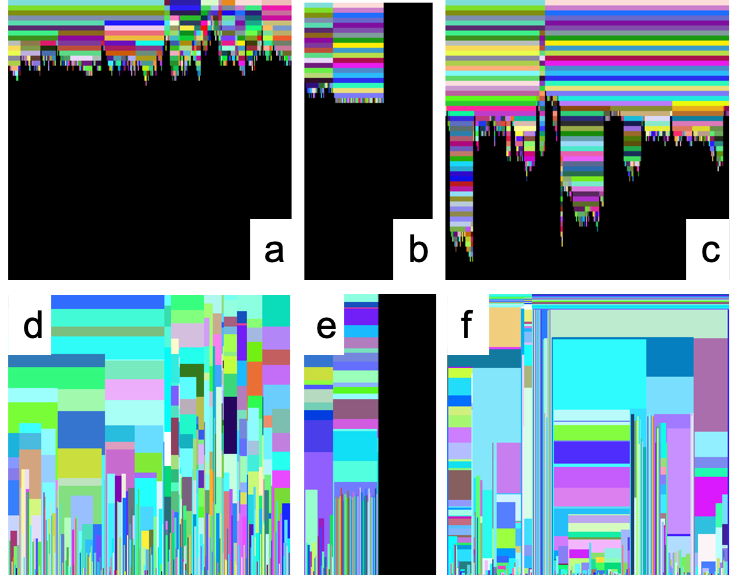
Fig. 8. Genealogies for the three phases of evolution
in Fig. 7 (a), (b), and (c), at the same time steps as those figures. These
genealogies are colour coded by genome and successive generations occupy rows
from the top (earliest time) to the present, coalescing backwards in time. The
corresponding time-resolved genealogies are shown in (d), (e), and (f), with
time between gene shifts represented as the vertical extent of each coloured
patch representing a genome.
Evolutionary activity, both genealogical activity and spatial pattern activity, reveal the evolutionary dynamics to be open-ended. Activity associated with evolution new functionality remains, however, elusive. We see what may be interpreted as major transitions [58],[19] in the collapse and recovery illustrated in Fig. 7.
4.4
Displacement
genealogies, computation and selection
Computation is
traditionally accomplished in the Game of Life by transmission of information
using gliders, locally oscillating and translating configurations. In other CAs, information is transmitted via
traveling boundaries between phases [25]. Genelife has the additional
feature that besides spatial patterns causing information transfer, genetic
information is also transferred as a result of dynamics. In order to capture the genetic information
transfer, we construct displacement genealogy histories, as in section 3.1:
every live cell has a short history of where the genome’s information has come
from in the past, including all spatial translations during this history. Such displacement genealogies can be further
reduced to state transition diagrams and their statistics analysed as shown in Fig.
9.
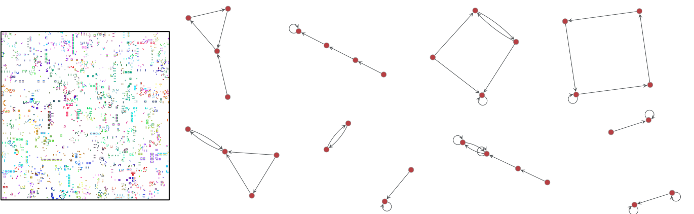
Fig. 9.
Evolution in a
universe of semi-totalistic rules[NP3]
described in section 2.2
produces a glider rich population, continually evolving (shown on the
left). At time ,
each live cell was polled for its history of the last sixteen timesteps of
displacement genealogy, to construct a state transition diagram. These state transition diagrams were
collected across all live cells, and the eight most common are shown on the
right.
Displacement
genealogies may be used to capture computational state transitions performed by
the spatial dynamics of the genomes. This is a simple, but concrete method of
empirically reducing the dynamics to computational state transitions, involving
a 1D thread of information following the path of genetic transmission, and
while not involving as much computation as with the -machine construction [25, 47] has advantages in 2D where the
amount of information needing to be digested for the construction of -machines becomes prohibitive. It is
well applicable for dynamics that produce many interacting periodic structures
(gliders and spaceships). If the
dynamics are too dense, spaceships travel only very short distances before
collision and their displacement genealogies proliferate to the point that
statistics are difficult to collect. At higher densities other regular
structures of spatial genetic transmission may arise that can then also be
captured by displacement genealogies. The local displacement genealogies can
also be analysed for most prominent period and mean displacement at this period
and coloured accordingly; an example is shown in Fig.
10.
4.5
Selection based on displacement memory
As an extension of the
model, without changing the relationship between genomes and rule tables, the
choice of ancestors can be made dependent on the current displacement genealogy
(in the same cell as genome). We made this step in
order to examine whether an autonomous selection for genomes that modify the
rules in such a way as to give rise to desirable local state genomic state
machines (as depicted in Fig.
9). To this end we introduced a set
of additional selection options that select for precise periodicity, for large
or small periods, for large or diagonal displacements. Interestingly, rich
repertoires of spaceships, as in the non-well-ordered selection model case of section
4.1, were found generically in such models, demonstrating that local selection
for dynamical traits is effective in genomic evolution, despite the indirect
nature of the selection feedback (with multiple genomes determining local rules
together). An example of such a simulation is shown in Fig.
10.
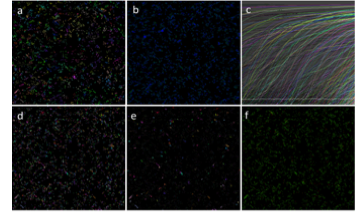
Fig. 10.
Selection for longer period
displacement histories resulting in rich populations of spaceships:
complementary images at t = 12772. a) colouring individual genomes by ID
b) visualizing the neighbour states for survival (blue) and birth (green), with
brightness proportional to s c) activity statistics of last 512 time steps d)
connected components (genetically distinguished) serving as the basis for
pattern analysis e) only novel patterns (occurring for first time as this step)
retain bright colours, all others darkened f) colour coding displacements
genealogies: quality of periodicity is brightness, with static period 1
entities in red and longer periods in increasing blue.
We have created genelife, a new version of Conway’s Game
of Life that is evolutionary, in the sense that all live cells are endowed with
a genome that can be passed on, possibly changed by mutation, to offspring
during birth processes. The GoL is an intriguing version of active media
because it has proven capability for universal computation, but computation
does not arise in typical asymptotic dynamics on finite lattices. Genelife’s evolutionary version of the GoL seeks to
capitalize on the implicit computational capabilities of the GoL’s to provide an evolutionary system that can produce
computation as an emergent property of the evolutionary dynamics.
One feature
of cellular automata with complex dynamics that has been historically important
is that the medium should be active, but have a natural relaxation to a
quiescent state, as indeed is observed for the GoL. Only special and rare
initial conditions lead to ongoing complex dynamics in the GoL, including
expansive dynamics that can escape any finite bounded region, and these initial
conditions are considered to be the carriers of complex natural (including
universal) computation. Bays [59], for example, in his search for
GoL-like rules in 3D, specifies that a rule R defines a "Game of
Life" if and only if both of the following are true:
1. A glider must
exist and
must occur "naturally"
if we apply R repeatedly
to primordial soup configurations. (A primordial
soup is any finite mass of arbitrarily
dense randomly dispersed living
cells.)
2. All primordial soup configurations,
when subjected
to R, must exhibit bounded growth.
In genelife, we could readily attain this criterion (or some more precise version of it) by making genes rare in sequence space that encode local rule departures that give rise to a live cell by a proper birth process (i.e. not a movement event in which a parent live cell gives rise to only one offspring and dies at its previous location). As we have implemented it here, however, we have simply accelerated the process of discovery for genes that can modify the local birth processes. We investigated the first two steps in making such genes rarer for the semi-totalistic case via the parameter : increasing the number of bits to encode a LUT entry from 1 to 2 to 4. We maintain that it is not natural to assume that the probability of configurations that may give rise to complex or universal computation is much lower than the probability of configurations that may lead to proliferation.
In some sense, our goal of having a rich evolving system contrasts with the desire of asymptotic quiescence characteristic of the GoL. We seek a medium that is active enough to spontaneously produce complex evolutionary dynamics rather than quiescence. But for evolutionary progress to be observed, we must still have a constraint on the activity of the medium, otherwise chaos ensues.
It is important to stress that many of the innovations presented here can be generalized beyond the framework of nearest neighbour and binary CAs. The use of nearest neighbours only in the CA rules is clearly just a convenient starting point for genetic extension models as proposed here. GoL models have been extended to larger neighbourhoods [60] and 3D [59], to provide more differentiated rules near to the GoL configurations s = 2, 3, and non-discrete generalizations such as Smooth Life [61] have also been proposed. Larger neighbourhoods in CAs do result in new phenomena, such as making spiral waves commonplace [31, 33]. The insights and tools developed for genelife will be useful in the more general context of both less strictly local rules, other lattices and even continuous state dynamical systems such as coupled map lattices [62].
Likewise, our association of genomes with live states in binary CAs is compelling but is not a fundamental limitation of the domain of application of genetic extensions. Firstly, the above approach can be used directly whenever it makes sense to distinguish two classes of states: the inanimate or physical states (devoid of biological information that can be inherited) and the live states (containing copyable or inheritable information). Secondly, one can also add ancillary information, differentiating inanimate states, in the same way as for live cells. The simplest example of this is the association of information strings also with 0 states in the current model. This could be viewed as extending the GoL with a more complex environment with differentiated resources, or put more simply, as adding a chemistry to the GoL. While transitions which copy long strings of such information would be equivalent to biological replication, which is not a property as yet found spontaneously in synthetic chemistry, there are a wealth of autocatalytic chemical reactions for simple substances that are formally equivalent to copy processes for limited information content.
In conclusion, we may regard genelife as a success, in the sense that it provides a rich evolutionary platform with a variety of mechanisms to exert control over evolutionary processes. We have also developed a novel coherent set of analytical tools reflecting both genetic and spatial information processing. Success might be considered limited, in the sense that emergence of increasingly complex computation within a genelife population remains an empirical challenge. Genlife’s ability to control evolution through constraints on genetic expression will enable the engineering of evolution’s emergent properties. We look forward to exploring these directions in the future.
Acknowledgements: The authors would like to thank the Earth Life Science Institute (ELSI Tokyo, Japan) for hosting them for a short visit as part of an EON Seed Grant in 2017 where this work began. The EON Seed Grant was supported by the John Templeton Foundation. Our thanks also to Nathaniel Virgo and Steen Rasmussen for helpful comments at an early stage in this work.
6
Supplementary
material
6.1
Deterministic
resolution of neutral selection.
In general, if two genomes are
different and a neutral outcome is sought, then some other mechanism must be
invoked to choose an ancestor for the newly born genome. The conventional
population genetics approach of choosing one of them randomly adds a major
source of stochasticity to the otherwise deterministic GoL. It turns out there
are a number of possible alternatives:
1. Random choice of live neighbours for
birth
2. Distinguish live neighbours for
birth by their position in the configuration
3. Examine the neighbourhoods of live
neighbours to distinguish them
Both 2. and
3. suffer from potential ambiguity if the live neighbours remain identical
under the distinction. We obviously would wish to preserve a certain degree of
spatial symmetry in both the alternatives 2. and 3. In the Supplementary
Material figures Supp. Fig. 1, Supp. Fig. 2, and Supp. Fig. 3, we catalogue and illustrate the
different configurations of live neighbours for the non-trivial cases of s =
2,3,4. The cases s=0,1 are very simple by comparison, and the cases 5,6,7,8 can
be obtained simply by exchanging zeros and ones in the figures. For the GoL B3
rule, we note that there is a very simple generic principle for choosing a
single ancestor among the three live neighbours positionally, and one that does
not break any of the spatial symmetries considered: choose the one at the “most
different” position. This most different position is indicated in green in the
figure in the appendix. Generally, it turns out that two of the three positions
are related to each other by more symmetries than the different one. Now this
is very good news, because it means that a deterministic inheritance scheme for
neutral selection based on spatial position can be achieved without breaking
spatial symmetries. Because approach 3. is incomplete for the many cases when
the live neighbours themselves have equal numbers of live neighbours, and
because a realization of 2. that works for B3 has been found, we do not pursue
3. further in this paper.
A somewhat
weaker, but still valid procedure that generalizes 2. to other numbers of live
neighbours (e.g. 2,4, etc) is to recognize that the choice of the most
different position for B3 can be broken down into three steps: a) find a
canonical representation of the pattern of live neighbours which represents all
symmetric versions of the pattern (under one of the chosen symmetries above) b)
specify the absolute position of the chosen position in this canonical
representation c) transform this position relative to the canonical
representation back to the “orientation” of the particular starting
configuration. It turns out that since
the canonical rotation is mapped symmetrically to each possible instance that
even making a simple choice such as the first position in the canonical
representation gives rise to a positional inheritance rule with symmetry
preserving properties. However non-trivial genetic dynamics such as genetic
rotors for GoL oscillators or still lifes are
possible.
We
illustrate this principle first for the case of octavian symmetry (section
2.4), which turns out to play a pivotal role in the analysis, and then extend
it to other (more physical) symmetries. The distinguished configurations for
s=2,3,4 are shown in the left column of figures A1-A3 for the 4,7,10 canonical
rotations. These are simply and efficiently defined as the 8-rotation of the
8-bit binary pattern of live neighbours that has the smallest numerical value.
All the different configurations for s=0-8 live neighbours given by the
binomial coefficients 8Cs (1,8,28,56,70,56,28,8,1) reduce
to (1,1,4,7,10,7,4,1,1) configurations distinguishable up to 8-rotation
symmetry. Note that these numbers only differ from 8Cs/8
for s=0,2,4,6,8 and because of the 6 ambiguous canonical bit patterns 00000000,
00010001, 00110011 and 01010101, 01110111, and 11111111 (i.e. patterns that can be rotated into themselves with less than 8
single steps). For these patterns only, an alternative rule must be found to
choose the ancestor if we allow B0, B2, B4, B6 or B8 rule extensions. In our
implementation for these special cases, we coded the following 8 disambiguation
options which are mostly deterministic but include one spatially and one
genetically random option:
1. random choice: this involves a
departure from determinism for these cases only
2. ignore problem and choose selected
bit of canonical configuration: accepting minimal asymmetry induced by these
comparatively infrequent (for s=1-7) cases.
3. disallow birth: this effectively
modifies the rules and is like excluding these rules from the table
4. choose lesser in value of genes if
different (otherwise it makes no difference) i.e. revert to non-neutral genetic
model in these (rare) cases only
5. similar to 4, choose gene with least
number of ones and if same, then lesser in value
6. choose a recombinant AND of all
genes involved in this case
7. choose a default ancestor such as
the gene coding for the Game of Life in these cases only
8. generate a random gene to give birth
to for these ambiguous instances
The option
6 is potentially minimally disruptive, effectively just reducing the rate of
departure from GoL dynamics and is better in most circumstances than option 5
that is also symmetric but creates a non-trivial correlation between dynamics
and genetic change. However, depending on the investigation, each of the
techniques has its strengths and weaknesses.
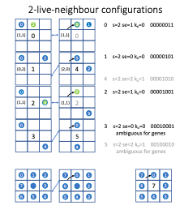
File:
2-liveconfig.pdf, scale 50%
Supp. Fig. 1.
Live neighbour configurations with . The figure shows the
configurations distinguished in the four different symmetries, in their
relation to the canonical octavian symmetry, which distinguishes the four in
the left column: semi-totalistic (1: i.e. all equivalent), quarter-totalistic
(3: different se), octavian (4) and isotropic (6). The canonical minimal binary
string representations of the configurations are shown on the right. The
deterministic positional choice of ancestor is shown in green, when this is
possible without further information (see main text). In the bottom row, the
numbering scheme for neighbours is shown, along with its rotation.
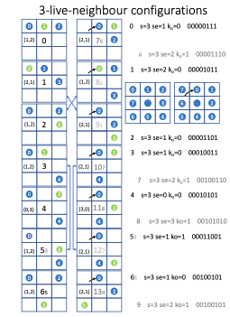
File:
3-liveconfig.pdf, scale 50%
Supp. Fig. 2.
Live neighbour configurations for . Explanation is analogous to Supp.
Fig. 1. The six distinguished configurations in octavian symmetry are shown in
the first column. The distinction of corner and edge-centred neighbours raises
this number to 10 in the fully isotropic case and only distinguishes these (by
se) results in 4 different structures. Note that in this case, as for there is always a unique deterministic
positional choice of neighbour, shown in green: the most different position
(the other two have greater symmetry).
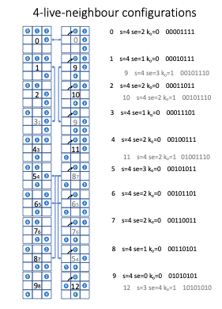
File:
4-liveconfig.pdf, scale 50%
Supp.
Fig. 3. Live neighbour configurations for . Here there are 10 distinguished
configurations in the octavian symmetry, 5 in quarter-totalistic and 13 (0-12) in
isotropic symmetry. The configurations 7, and 9(12) are the ones where it is
not possible to unambiguously specify a particular choice of ancestor in way
which is preserved under the symmetries and identifiable from the canonical
binary representation. For all others a
deterministic positional choice may be made.
6.2
Simulation
examples
Supplementary
figures Supp. Fig. 4 and Supp. Fig. 5 are movies that show the Game of Life
dynamics, including genome activity (Supp. Fig. 4) and genealogy evolution (Supp. Fig. 5).
Note that the population is evolving, in the sense that new genes are
introduced into the population (through mutation), but the genes are totally
uncoupled from the dynamics. They are
simply “going along for the ride”.
File: “GoL
activity.mov”
Supp.
Fig. 4.
Game of life time evolution, with activity.
File: “GoL
genealogy.mov”
Supp.
Fig. 5. Game of Life time evolution, with
genealogies. First
ancestor genealogies with the vertical axis genealogical depth, coloured by
sequence type.
File: “s11-collapse-short.mov”
Supp. Fig. 6.
Complex evolution discussed in section 4.3 First phase: expanding blooms of competing domains, second
phase is a collapse of the population, as it is almost taken over by a single
genome, and the third phase is successful invasion of several new species,
which continue to evolve for competing domains that have different dynamics
from the original expanding bloom domains.
1. Von Neumann, J., Burks, A.W.: Theory of
self-reproducing automata. University of Illinois Press, Urbana, (1966)
2. Gardner, M.: Mathematical Games
–The fantastic combinations of John Conway’s new solitaire game “life”.
Sci Am 223, 120--123 (1970) doi:10.1038/scientificamerican1070-120
3. Wolfram, S.: Statistical mechanics of cellular
automata. Reviews of Modern Physics 55, 601-644 (1983)
10.1103/RevModPhys.55.601
4. Packard, N.H., Wolfram, S.: Two-dimensional
cellular automata. J Stat Phys 38, 901-946 (1985) 10.1007/BF01010423
5. Rendell, P., http://rendell-attic.org/gol/tm.htm 2018
6. Pesavento, U.: An Implementation of von
Neumann's Self-Reproducing Machine. Artif Life 2, 337-354 (1995)
10.1162/artl.1995.2.4.337
7. Conway, J.H.: On Numbers and Games. A K
Peters/CRC Press United States (2000) ISBN 9781568811277
8. Johnston, N., http://www.conwaylife.com/wiki/LifeWiki 2019
9. Berlekamp, E.R., Conway, J.H., Guy, R.K.:
Winning ways for your mathematical plays. vol. 4, pp. 1004. A.K. Peters,
Natick, Mass. (2001) 1568811446
10. Rendell, P.: A Fully Universal Turing Machine
in Conway's Game of Life. J Cell Autom 8, 19-38 (2013)
11. Bak, P., Chen, K., Creutz, M.: Self-Organized
Criticality in the Game of Life. Nature 342, 780-782 (1989) DOI
10.1038/342780a0
12. Bak, P.: Self-Organized Criticality in
Nonconservative Models. Physica A 191, 41-46 (1992) Doi
10.1016/0378-4371(92)90503-I
13. Shapiro, A., https://github.com/ShprAlex/SproutLife/wiki 2019
14. Medernach, D., Kowaliw, T., Ryan, C., Doursat,
R.: Long-Term Evolutionary Dynamics in Heterogeneous Cellular Automata.
Gecco'13: Proceedings of the 2013 Genetic and Evolutionary Computation
Conference 231-238 (2013)
15. Ryan, C., Fitzgerald, J., Kowaliw, T., Doursat,
R., Carrignon, S., Medernach, D.: Evolution of Heterogeneous Cellular Automata
in Fluctuating Environments. The 2019 Conference on Artificial Life 28, 216-223
(2016) 10.1162/978-0-262-33936-0-ch041
16. Zamaraev, A., https://github.com/a5kin/evolife 2019
17. Suzuki, K., Ikegami, T.: Homeodynamics in the
Game of Life. pp. 600-607 (2008)
18. Taylor, T.: Redrawing the Boundary between
Organism and Environment. Artificial
Life IX: Proceedings of the Ninth International Conference on the Simulation
and Synthesis of Living Systems, pp. 0. The MIT Press (2004) 10.7551/mitpress/1429.003.0045
19. Turney, P.D.: Modeling Major Transitions in
Evolution with the Game of Life. arXiv
e-prints, (2019)
20. Eppstein, D.: Growth and Decay
in Life-Like Cellular Automata. In: Adamatzky, A. (ed.) Game of Life
Cellular Automata, pp. 71-97. Springer London, London (2010) 978-1-84996-217-9
21. Mitchell, M., Hraber, P.T., Crutchfield, J.P.:
Revisiting the Edge of Chaos: Evolving Cellular Automata to Perform
Computations. Complex Syst 7, 89-130 (1993)
22. Schreiber, T.: Measuring information transfer.
Physical review letters 85, 461 (2000)
23. Lizier, J.T.: Measuring the Dynamics of
Information Processing on a Local Scale in Time and Space. In: Wibral, M.,
Vicente, R., Lizier, J.T. (eds.) Directed Information Measures in Neuroscience,
pp. 161-193. Springer Berlin Heidelberg, Berlin, Heidelberg (2014) 978-3-642-54474-3
24. Helvik, T.,
Lindgren, K., Nordahl, M.G.: Local Information in One-Dimensional Cellular
Automata. In: Cellular Automata, pp.
121-130. Springer Berlin Heidelberg,
25. Crutchfield, J.P.: The Calculi of Emergence -
Computation, Dynamics and Induction. Physica D 75, 11-54 (1994)
10.1016/0167-2789(94)90273-9
26. Crutchfield, J.P., Ellison, C.J., James, R.G.,
Mahoney, J.R.: Synchronization and control in intrinsic and designed
computation: An information-theoretic analysis of competing models of
stochastic computation. Chaos 20, (2010) 10.1063/1.3489888
27. Hanson, J.E., Crutchfield, J.P.: Computational
mechanics of cellular automata: An example. Physica D 103, 169-189 (1997)
10.1016/S0167-2789(96)00259-X
28. Marzen, S.E., Crutchfield, J.P.: Statistical
signatures of structural organization: The case of long memory in renewal
processes. Phys Lett A 380, 1517-1525 (2016) 10.1016/j.physleta.2016.02.052
29. Shalizi, C.R., Crutchfield, J.P.: Computational
mechanics: Pattern and prediction, structure and simplicity. J Stat Phys 104,
817-879 (2001) 10.1023/A:1010388907793
30. McCaskill, J.S., Packard, N.H., Rasmussen, S.,
Bedau, M.A.: Evolutionary self-organization in complex fluids. Philos Trans R
Soc Lond B Biol Sci 362, 1763-1779 (2007) 10.1098/rstb.2007.2069
31. Boerlijst, M.C., Hogeweg, P.: Spiral wave
structure in pre-biotic evolution: Hypercycles stable against parasites.
Physica D: Nonlinear Phenomena 48, 17-28 (1991) https://doi.org/10.1016/0167-2789(91)90049-F
32. Nowak, M.A., May, R.M.: Evolutionary games and
spatial chaos. Nature 359, 826-829 (1992) 10.1038/359826a0
33. Lindgren, K., Nordahl, M.G.: Evolutionary
dynamics of spatial games. Physica D - Special issue on constructive complexity
and artificial reality archive 75, 292-309 (1994) 10.1016/0167-2789(94)90289-5
34. Fraser, A.S.: An introduction to population
genetic theory. By J. F. Crow and M. Kimura. Harper and Row, New York. 656 pp.
1970. Teratology 5, 386-387 (1972) 10.1002/tera.1420050318
35. He, L., Ren, X., Gao, Q., Zhao, X., Yao, B.,
Chao, Y.: The connected-component labeling problem: A review of
state-of-the-art algorithms. Pattern Recognition 70, 25-43 (2017) https://doi.org/10.1016/j.patcog.2017.04.018
36. Suzuki, K., Horiba, I., Sugie, N.: Linear-time
connected-component labeling based on sequential local operations. Computer
Vision and Image Understanding 89, 1-23 (2003) https://doi.org/10.1016/S1077-3142(02)00030-9
37. Wu, K., Otoo, E., Suzuki, K.: Optimizing
two-pass connected-component labeling algorithms. Pattern Analysis and
Applications 12, 117-135 (2009) 10.1007/s10044-008-0109-y
38. Samet, H.: Connected Component Labeling Using
Quadtrees. J. ACM 28, 487-501 (1981) 10.1145/322261.322267
39. Rokicki, T., http://golly.sourceforge.net 2019
40. Gosper, R.W.: Exploiting regularities in large
cellular spaces. Physica D: Nonlinear Phenomena 10, 75-80 (1984) https://doi.org/10.1016/0167-2789(84)90251-3
41. Volgenant, A.: Linear and semi-assignment
problems: A core oriented approach. Computers & Operations Research 23,
917-932 (1996) https://doi.org/10.1016/0305-0548(96)00010-X
42. Gupta, R., https://www.geeksforgeeks.org/hopcroft-karp-algorithm-for-maximum-matching-set-2-implementation/ 2018
43. Liang, X.S.: Information flow and causality as
rigorous notions ab initio. Phys Rev E 94, (2016) 10.1103/PhysRevE.94.052201
44. Bossomaier, T.R.J.: An introduction to transfer
entropy : information flow in complex systems. Springer, Cham, Switzerland :
(2016) 9783319432229
3319432222
45. Rupe, A., Crutchfield, J.P.: Local causal
states and discrete coherent structures. Chaos 28, (2018) 10.1063/1.5021130
46. Varn, D.P., Canright, G.S., Crutchfield, J.P.:
epsilon-Machine spectral reconstruction theory: a direct method for inferring
planar disorder and structure from X-ray diffraction studies. Acta Crystallogr.
Sect. A 69, 197-206 (2013) 10.1107/S0108767312046582
47. Sinapayen, L., Ikegami, T.: Online fitting of
computational cost to environmental complexity: Predictive coding with the
ε-network. The 2019 Conference on Artificial Life 29, 380-387 (2017)
10.1162/isal_a_065
48. Gustavsson, M., https://github.com/mattiasgustavsson/libs/blob/master/hashtable.h 2017
49. Bedau, M., Packard, N.: Measurement of
evolutionary activity, teleology, and life. In: Artificial Life II, pp.
431-461. Addison Wesley,
50. Bedau, M.A., Snyder, E., Packard, N.H.: A
classification of long-term evolutionary dynamics. In: From Anim Animat, pp.
228-237. MIT Press,
51. Channon, A.: Unbounded evolutionary dynamics in
a system of agents that actively process and transform their environment. Genet
Program Evol M 7, 253-281 (2006)
52. Stout, A., Spector, L.: Validation of
evolutionary activity metrics for long-term evolutionary dynamics. In:
Proceedings of the 7th annual conference on Genetic and evolutionary
computation, pp. 137-142. ACM,
53. Kingman, J.F.C.: The coalescent. Stochastic
Processes and their Applications 13, 235-248 (1982) https://doi.org/10.1016/0304-4149(82)90011-4
54. Airam Blancas, J.-J.D.A.L.A.S.-J.: Trees within
trees: simple nested coalescents. Electron J Probab 23, doi:10.1214/18-ejp219
55. Hein, J., Schierup, Mikkel H., Wiuf, C.:
Gene Genealogies, Variation and Evolution: A Primer in Coalescent Theory. .
Oxford University Press, Oxford and New York (2005) 0‐19‐852995‐3
56. Éric Brunet, B.D.: Genealogies in simple models
of evolution. 1202.5997 doi:10.1088/1742-5468/2013/01/p01006
57. Kay, N.-S.: Graphs in sequence spaces: a review
of statistical geometry. Biophys Chem 66, 111-131 10.1016/s0301-4622(97)00064-1
PMID - 9362556
58. Smith, J.M., Szathmary, E.: The major
transitions in evolution. Oxford University Press (1997) ISBN 019850294X
59. Bays, C.: Candidates for the game of life in
three dimensions. Complex Syst 1, 373--400 (1987) 10.1.1.466.9908
60. Evans, K.M.: Larger than life : it's so
nonlinear. (1996)
61. Rafler, S.: Generalization of Conway's
"Game of Life" to a continuous domain - SmoothLife. arXiv,
(2011)
62. Kaneko, K.: Overview of coupled map lattices.
Chaos: An Interdisciplinary Journal of Nonlinear Science 2, 279-282 (1992)
10.1063/1.165869